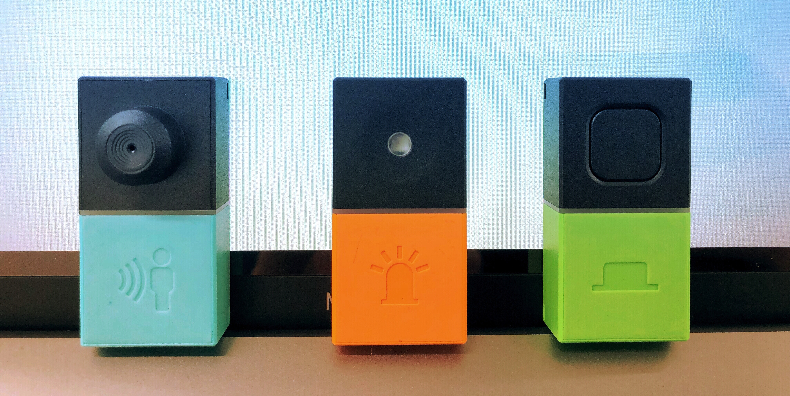
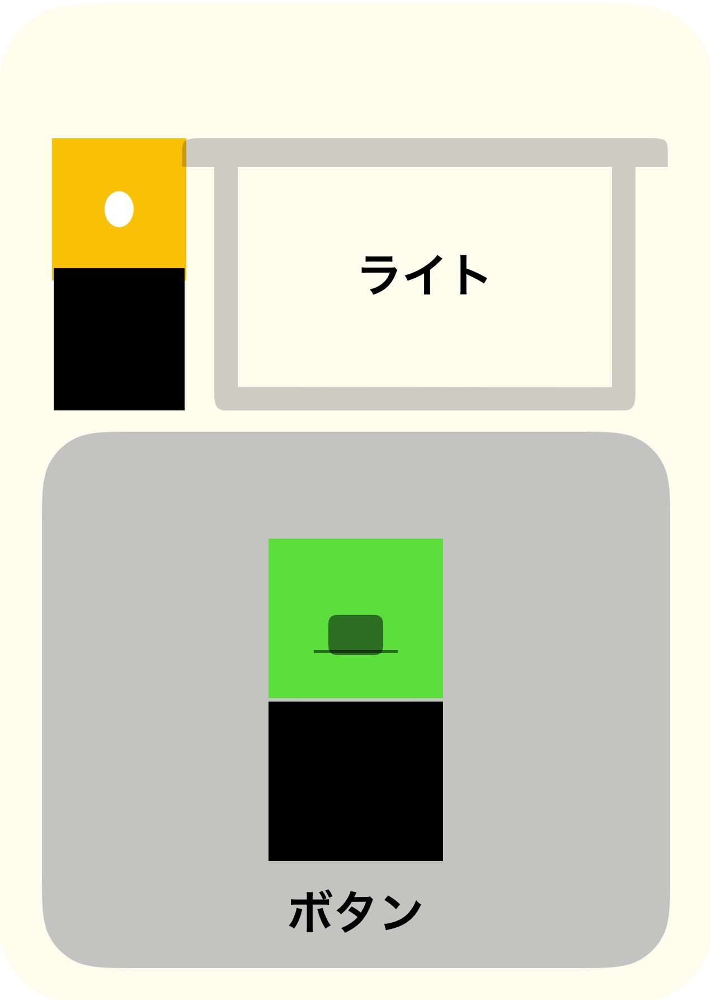
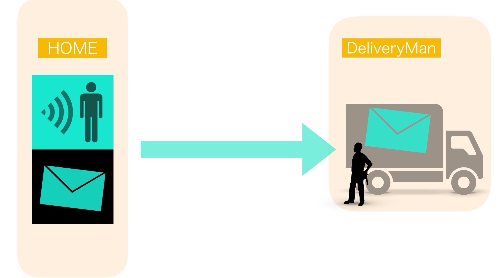

MESH Report
授業内容
menu
・「マインドマップから４グループに分け、1チームに一つの「MESH」セット。」
・「MESH」センサーを使い、各班最低一つ「オリジナルレシピを作る。」
・「MESHアプリをダウンロードして、電子タグと同期させる。」

・「アプリで電子回路を組む」
・「完成した電子回路が正常に稼動するか試してみる。」
・「グループメンバーの特性をシステムに付加価値として組み込んでみる。」
・「試行錯誤を繰り返して精度を上げる。（前回の失敗点と反省・アドバイスを活かす）」
・「成果の発表」
・「レスポンス・まとめ」
実際の様子：1
グループ配分
マインドマップで自身の傾向を分析した用紙をもとにに先生がグループを作った。趣味の傾向や、身体性の高低を基軸に分け、各チームに一つづつ「MESH」が渡された。

グループを配分によって、それぞれのチームの傾向や特性を活かしたMESHレシピを制作した。
レシピのテーマ・コンセプト
わたしたちのチームは「自動配達システム」（オートメーションデリバリーマンSystem）の設計をおこなった。配達の際、玄関先まで行って荷物を受け取る手続きや、再配達の連絡などを自動でおこなってくれるレシピづくりに挑戦した。
使ったセンサー・電子タグ
・人感センサー（人の動作が確認された時、またそうでない時）
・ライト（センサーに反応が確認された際に光る）
・ボタン（ボタンを押す）
システムの概要・シークエンス図
到着から配達完了まで
インターフォンのイメージ
配達員が到着する。
インターフォンを押す。
（配達員はその後、専用のボタンセンサーを押す。）
依頼者に到着メールが届く

メッセージライトが光る
荷物が置かれ、配達完了

MESHのレシピ
依頼主不在の場合・再配達の場合
10~30秒間 依頼主が玄関そばまで来なかった場合、「人感センサー」が働き、配達員にメールが届く不在を知らせるボイスメッセージが流れる
再配達以来の詳細メールが配達員に届く


実際の様子：２
反省点とプレゼンでのアドバイス
作ったMESHレシピをプレゼンし、先生からレスポンスをもらった。レシピそのものに問題はなく、正常に動いたが、「配達員」と「依頼主」の関係が聞き手に十分理解されていなかった。
プレゼンソフトを使い、ビジュアル的な工夫は施したつもりだったが、「配達員」と「依頼者」のそれぞれを一つの流れとして捉えるのではなく、二分割して説明した方がよかったのかもしれない。
また、「ライト」を使って、メッセージを表示するという提案も、小さなサプライズとしてはいいかもしれないが、中にはそれみて気分を害する人もいるかもしれないと指摘された。
「人感センサー」には人間だないものや、本来の目的や状況に合わない動きでも感知されてしまう可能性があるなど、どのようにして、感知を限定認識させるかも問題だった。
結局、MESHのみでは応用性に限界があり、複雑で、高度なレシピを設計することはできず、実験的な範囲で終わってしまった。
今回の授業のまとめ
「MESH」は高度な電子回路の設計やプログラミングをせずとも、簡単にセンサーを作ることができ、その意味では、私たちにIoT技術を身近に感じさせてくれるツールである。日常生活に溢れた、電子機器は人間の入力したコード、人間の動作などに応じて様々なプログラムを実行しているわけだが、なかなかそれらを理解しようと試みる人はいない。
MESHは「ボタン」や「ライト」といったものから、「人感センサー」や「湿度・温度センサー」のようなものまで一つの電子タグとして簡易的にデザインされている。
その汎用性の高さから、様々な実験をもとに、「センサーを使って一体何ができるのか？」を考え、教えさせてくれものだ。
電子機器やIoT製品の普及により、わたしたちの生活はより効率的なものになった。
そのためには「センサー」を用いて人間に行動を監視・分析し、システムに反映させるのが最も合理的である。
つまり、センサーを取り付けることによって、私達の行動は読み取られ、それに応じた機能プログラムを実行しているということだ。
今回の授業で取り扱った「MESH」もその意味では同じなのだ。
センサーが身近なものになりつつある今、このようなことを実践し、学んでおくことは大切なことではないだろうか？
MESHを通してセンサーの持つ可能性やリスクに気づくいいキッカケとなった。